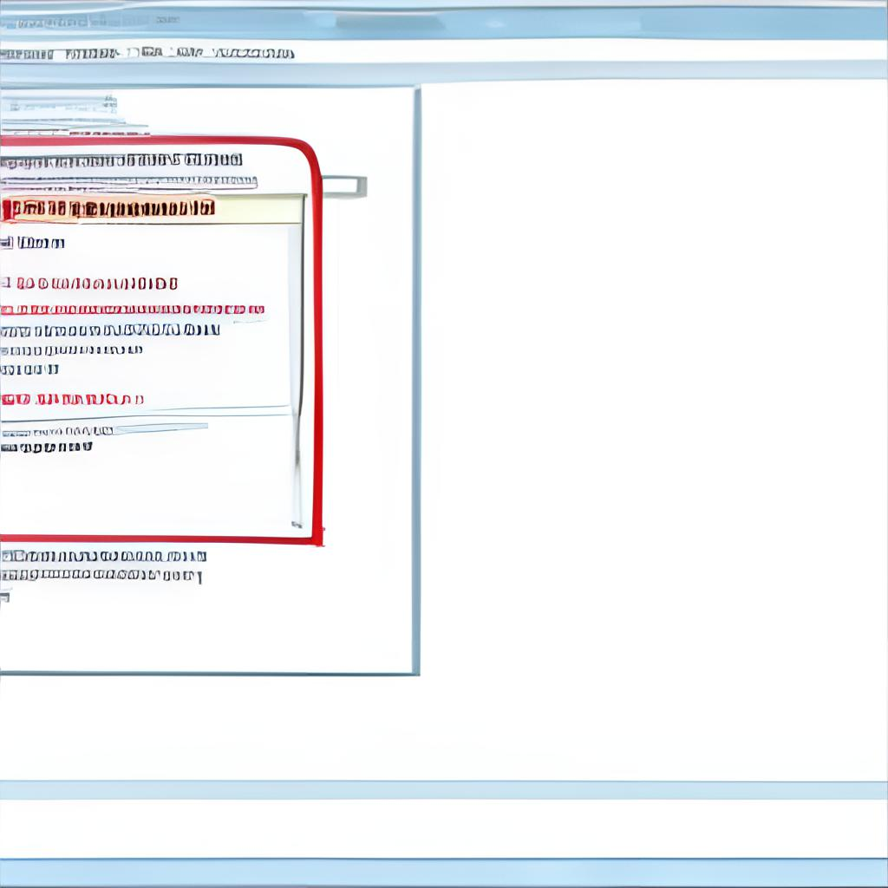

Pathfinder
Помощник в построении URL
 (лого по версии DALL-E)
Анатомия URL (в проекте)
https://api.project.ru/v1/{categoryId}/users?sort=name
https://api.project.ru/v1/{categoryId}/users?sort=name
baseUrl
ServerConfig(baseUrl = "https://api.project.ru/v1/")
Складывается в репозиторий/persistance на старте
Скармливается Retrofit при его инициализации
Меняется через дебаг панель
https://api.project.ru/v1/{categoryId}/users?sort=name
Path-параметр
Задаётся через Retrofit @Path
Конфигурируется в ProjectApi.kt-файлах
Фактическое значение передаётся из Repository
Меняется через дебаг панель
https://api.project.ru/v1/{categoryId}/users?sort=name
Query-параметр
Задаётся через Retrofit @Query
Конфигурируется в ProjectApi.kt-файлах
Фактическое значение передаётся из Repository
Меняется через дебаг панель
Pathfinder
Pathfinder
Библиотека для конфигурации URL-ов
Только URL
🚫 Headers
🚫 POST Body
🚫 Ktor, OkHttpClient, Retrofit
✅ URL
API
// in Application.kt
val pathFinder = PathFinder(
environments = listOf(server1, server2),
urls = listOf(
UrlSpec(id = uuid1, "/{categoryId}/users"),
UrlSpec(id = uuid2, "/list/{userId}")
)
)
API
// in Repository.kt
val url: String = pathFinder.buildUrl(
urlSpec1.id,
mapOf("categoryId" to "485")
)
// url = "https://mock.product.ru/api/v1/485/users"
API
interface NetworkApi {
// Было
@GET("{categoryId}/users")
suspend fun fetchUsers(@Path categoryId: String): Users
// Стало
@GET
suspend fun fetchUsers(@Url url: String): Users
}
API
interface NetworkApi {
@POST
@Header("Authorization: Bearer grizly")
suspend fun updateUser(
@Url url: String,
@Body requestBody: UpdateRequest
)
}
PathFinder UI
Управление текущим сервером (baseUrl)
Список всех запросов в приложении
Override Path и Query аргументов любого запроса
Полезна для QA и DEV
sealed class ContentState {
object None : ContentState()
object Loading : ContentState()
object Ready : ContentState()
data class Error(error: Throwable) : ContentState()
}
Algebraic?

Yussss!

data class AccountApplicationSM(
val userId: String,
val id: String,
val amount: Money?,
val status: ProductStatus.AccountApplicationStatus,
val number: String
)
Algebraic?

Yussss!

class BottomSheetSearchSelectorDialog {
private var epoxyController: BottomSheetSearchSelectorEpoxyController? = null
private var dialog: BottomSheetDialog? = null
fun show() { dialog?.show() }
fun dismiss() {
hideKeyboard(dialog?.window?.decorView)
dialog?.dismiss()
}
}
Algebraic?

Эммммм...

Причём здесь алгебра?
Похожие операции
Мат. нотация используется в теории типов (создание ЯП) для их записи
Игра
«Сколько можно создать уникальных значений этого типа?»
| Nothing | 0 |
| Unit | 1 |
| Boolean | 2 |
sealed class Boolean {
object True : Boolean()
object False : Boolean()
}
«Сколько можно создать уникальных значений этого типа?»
| Nothing | 0 |
| Unit | 1 |
| Boolean | 1 + 1 |
sealed class Answer {
object Yes : Answer()
object No : Answer()
object NotSure : Answer()
}
1 + 1 + 1 = 3
и так далее (5, 6, 7)...
sealed class Optional<A> {
object None : Optional<Nothing>()
data class Some<A>(value: A) : Optional<A>()
}
1 + A
«+» читается как «или»
sealed class Either<A, B> {
data class Left<A>(value: A) : Either<A, Nothing>()
data class Right<B>(value: B) : Either<Nothing, B>()
}
A + B
data class Pair<A, B>(
val first: A,
val second: B
)
Если A=Answer, B=Boolean
(Yes, True) (Yes, False)
(No, True) (No, False)
(NotSure, True) (NotSure, False)
3 × 2 = 6 ⇒ A × B
data class Triple<A, B, C, D>(
val first: A,
val second: B,
val third: Either<C, D>
)
A × B × (C + D)
(что будет если раскрыть скобки?...)
sealed class Either<A, B, C, D> {
data class Left(value: Pair<A, B>) : Either<...>()
data class Right(value: Pair<C, D>) : Either<...>()
}
(A × B) + (C × D)
fun callMe(a: A): B
// или
val callMe: (A) -> B
BA
«Зачем мне это знать?»


- Интересно (теория + фундамент)
- Терминология: «sum types», «product types», «union types»
- Влияние на дизайн и фичи языков программирования (Java, Kotlin, Typescript, Dart)
Ссылки
- Исходники презы:
https://github.com/dimsuz/adt-talk - Статья by Joel Burget про ADT (+ ряд тейлора, zippers, дифференцирование)
https://codewords.recurse.com/issues/three/algebra-and-calculus-of-algebraic-data-types